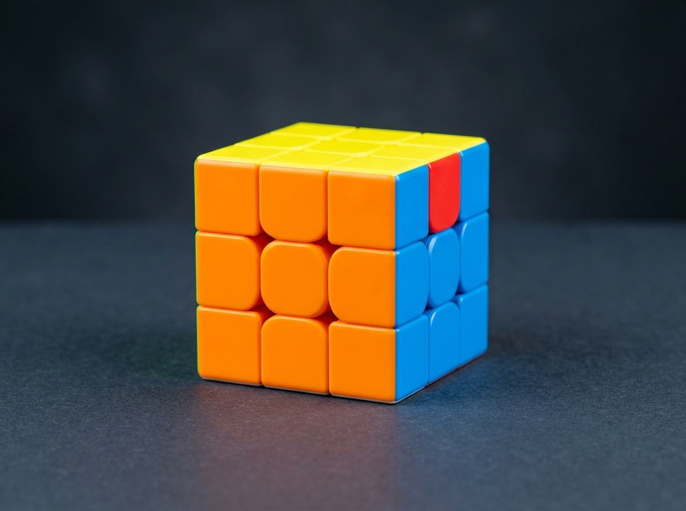
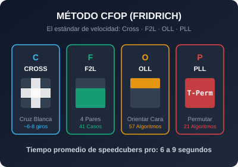

🧊 Cubos
Conoce diferentes tipos de cubos (2x2, 3x3, 4x4, Pyraminx...) y descubre cuál se adapta mejor a lo que buscas.
El mundo del cubo de Rubik
Aprende sobre cubos de Rubik, descubre diferentes métodos de resolución y encuentra productos para mejorar tus tiempos y tu experiencia al armarlos.
Información organizada para quienes están aprendiendo a armar su primer cubo o quieren mejorar su velocidad en speedcubing.

Conoce diferentes tipos de cubos (2x2, 3x3, 4x4, Pyraminx...) y descubre cuál se adapta mejor a lo que buscas.

Descubre diferentes formas de resolver un cubo: desde el método principiante hasta métodos avanzados como CFOP y Roux.
Aprende sobre la historia del cubo de Rubik, en qué consiste el speedcubing y consejos prácticos para bajar tus tiempos.